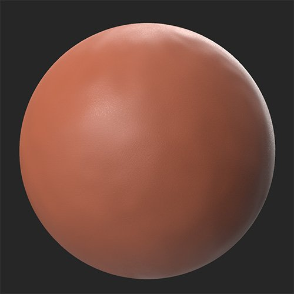
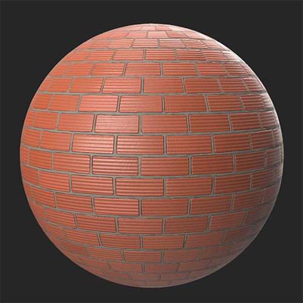

In: Generators
DescriptionThe Brickwall filter generates a brick pattern based on the layers below it. This is useful for creating brick walls (as the name suggests) but also floors, or anywhere else bricks are used.
In the images below, a clay material is converted into a brick wall with the Brickwall filter.


Presets
Select from a number of presets to quickly emulate a specific style.
Basic Parameters
Mix
Cement
Age
Advanced Parameters
Usage Guide
The Brickwall filter breaks up the underlying material into individual bricks that it then rearranges. For this reason, the Brickwall filter works best with hard surfaces like rocks or metals - in other words the materials most well suited to being bricks in the real world.
The Brickwall filter is useful for creating a base material that you can then layer other effects on top of, like moss, snow or dirt.